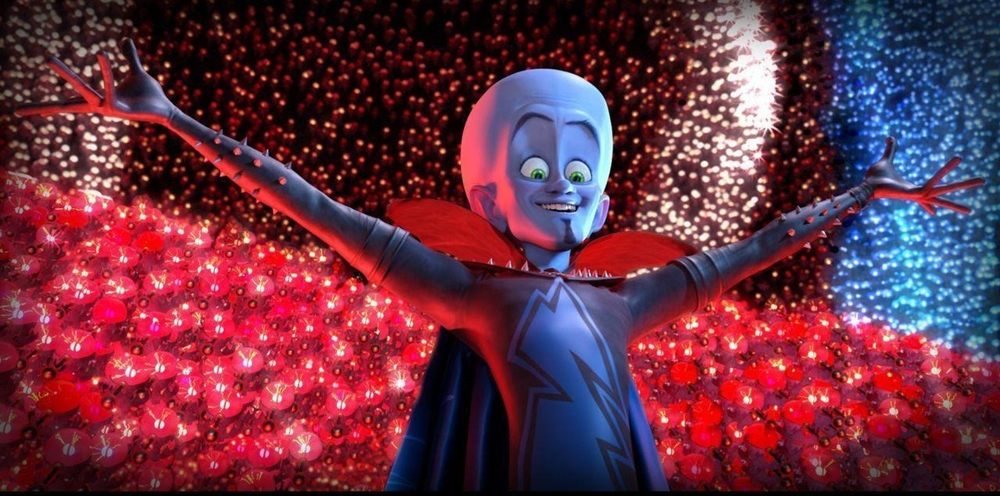

Presentation — The Art of the Show
The villain who never throws the first punch. He throws the first act — and the battlefield applauds itself into a trap.

Presentation — The Art of the Show
The villain who never throws the first punch. He throws the first act — and the battlefield applauds itself into a trap.
Feature map
The programme, act by act — every trick in the order he perfected it. Latecomers will be seated during the applause.
Presentation!
Bonus action · 2 CE · 1 minute.
Every great performer knows: never be where they aim. You conjure up to 3 holographic duplicates of yourself in unoccupied spaces within 30 ft of you. The duplicates mirror your movements and remain within 30 ft of you. Whenever a creature makes an attack roll against you, roll a d20: on a result of 11 or higher, the attack targets one of your duplicates instead (your choice which). A duplicate has AC 10 + your CHA modifier and pops the instant an attack hits it — no damage roll required. Duplicates cannot attack, cast, or take actions; they are pure presentation. The show runs for 1 minute or until the last double takes its bow.
Misdirection
Reaction · 1 CE.
The hand is quicker than the eye, and the eye is quicker than the sword. When a creature targets you with an attack, you may use your reaction: either impose disadvantage on the attack roll, or redirect the attack to one of your active holographic duplicates — resolve the attack against the duplicate instead, and it pops if hit. Declare before the roll is made. The audience gasps; the blade finds only light.
Dehydration Gun
Action · 3 CE · 30 ft, one creature.
His favorite gadget, and the only honest one — it does exactly what it says. Target one creature within 30 ft: it makes a CON save against your CE DC. On a failure, it shrinks one size category for 1 minute: its weapon attacks deal half damage, and it has disadvantage on Strength checks and Strength saving throws. On a success, the cube misses its mark and nothing happens. A creature already shrunk by this feature cannot be shrunk further.
The Speech
Action · 5 CE · 60 ft, creatures that can hear you.
The grand address — the moment the villain explains the plan and the heroes realize they are already inside it. Each creature of your choice within 60 ft that can hear you makes a WIS save against your CE DC. On a failure, it is charmed by you for 1 minute: it regards you as a beloved performer and will not willingly attack you or let you come to harm. The charm ends early if you or your allies damage the creature. On a success, it merely applauds politely. Creatures immune to being charmed are immune to the Speech, as they are immune to joy.
Showman's Gambit
Bonus action · 2 CE · one creature you can see.
Every showman plants the prediction before the trick. Declare it aloud: name one creature you can see and one action — make an attack, cast a spell or use a technique feature, or move more than half its speed. For 1 minute, the first time the named creature takes the named action, it makes a WIS save against your CE DC. On a failure, the action fails and is wasted, and the creature takes 3d8 psychic damage as the crowd turns on cue. On a success, the action proceeds — but your next attack roll against that creature has advantage. You called it.
The Unveiling
Passive.
The craft outgrows the stage. Presentation! now conjures 5 duplicates, lasts 10 minutes, and you may place duplicates anywhere within 60 ft of you — they no longer need to mirror your position. As a bonus action, you may swap places with any one of your duplicates within 60 ft. The audience never knows which one is real. Some nights, neither do you.
Maximum, Domain, or equivalent.
Capstone material.
The Grand Presentation
The ultimate show — the one they talk about for years. Every creature of your choice within 120 ft that can see and hear you makes a WIS save against your CE DC. On a failure: 8d8 psychic damage, and you implant a single suggestion in its mind (as the suggestion spell; it requires no concentration and lasts 8 hours). On a success: half damage and no suggestion. No encore has ever been demanded so unanimously.
The Show Must Go On
The presentation never truly ends. Presentation! costs you 0 CE, and if you begin your turn with no active duplicates, one re-forms in an unoccupied space within 30 ft of you — the understudy is always ready. Once per long rest, when you are reduced to 0 hit points, you do not fall: instead you drop to 1 hit point, teleport up to 60 ft to an unoccupied space you can see in a burst of smoke and confetti, and 5 duplicates appear around you. Until the start of your next turn, attacks against you have disadvantage. The crowd is still applauding.
Build-defining options.
These are optional character-building feats. You must meet each listed prerequisite before selecting it.
Working the Crowd
Your doubles learn stagecraft. While at least one of your holographic duplicates is active, you may take the Help action to aid an ally within 30 ft of any duplicate — the double leans in and points at exactly the right moment, and the aid is delivered from the duplicate's position. Additionally, your duplicates can carry and manipulate objects weighing up to 5 lb (opening doors, lifting keys, passing notes). The stagehands are union now.
Pocket Arsenal
The gun works on things that never had a saving throw. As an action, you may dehydrate one unattended Large or smaller object into a small blue cube for 8 hours; as an action, you may rehydrate a cube you created, restoring the object in an unoccupied space within 5 ft of you. You can maintain up to PB cubes at once; if you exceed the limit, the oldest cube rehydrates harmlessly. Smuggling has never been this polite.
Standing Ovation
End the show on your terms. As a bonus action, you may end The Speech early: each ally within 60 ft who heard it gains temporary hit points equal to your CHA modifier + your level and advantage on its next Charisma check within 1 hour — they carry the applause with them. Enemies charmed by The Speech remember the performance fondly: for 24 hours they have disadvantage on attack rolls against you, provided you have not damaged them since.
Read the Room
Your predictions widen. When you declare a Showman's Gambit, you may name a saving throw (Strength, Dexterity, or Wisdom) instead of an action: the first time the named creature makes that saving throw within 1 minute, it does so with disadvantage — you announced the dodge before it moved. If the creature makes no such save before the minute ends, it takes 2d8 psychic damage as the unanswered prediction hangs in the air.